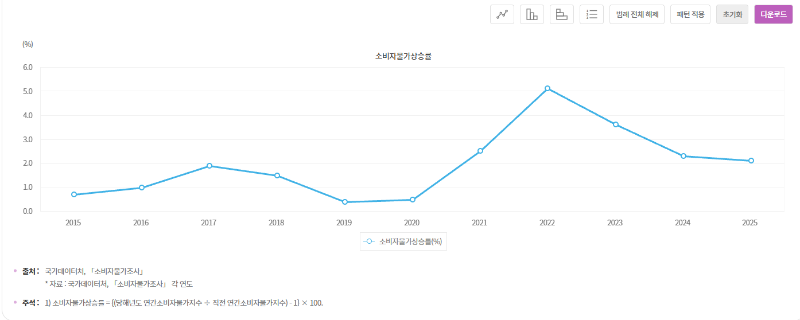
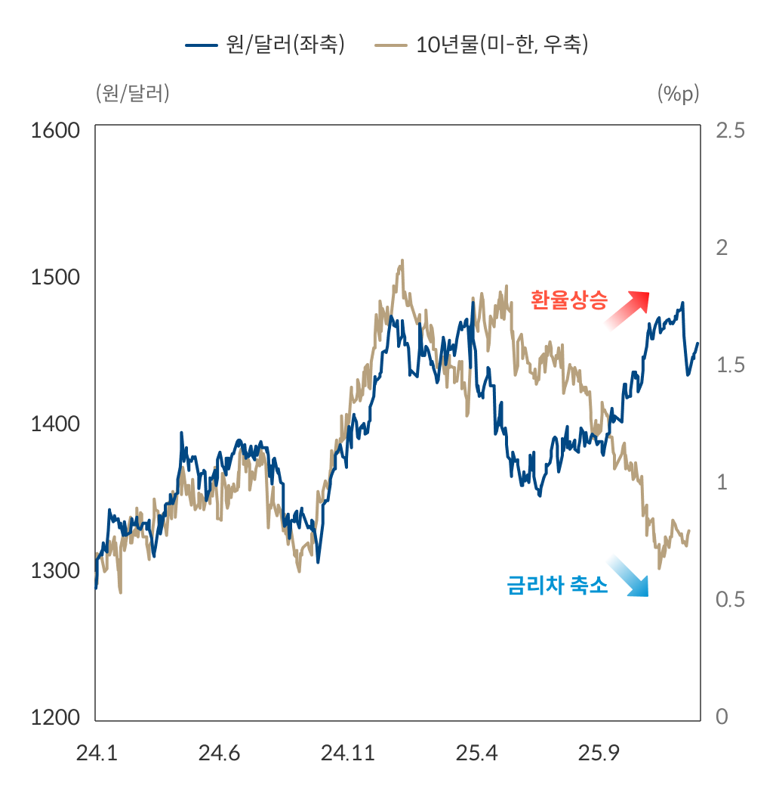
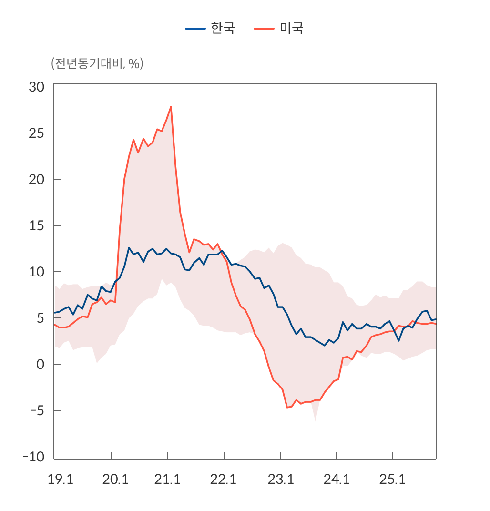

기존부터 저렇게 생각해 오긴 했지만 굳이 글을 쓰진 않았는데
이번에 슈카월드에 나와서 인터뷰하는 내용들도 듣고 역시 억까당할 사람은 아니라고 생각해서
똥글 한번 써봄
이건 슈카월드 링크인데 바이럴 아니냐? 라고 하면 할말은 없지만 라디오처럼 들으면
좋은 내용이라고 생각한다.
사실 청년 서학개미가 쿨해보여서 미장 한다더라 드립한번 쳤다가 욕 바가지로 먹었는데 환율 박살나고 국장 떡상하면서 재평가 받는 느낌이긴 했지만
과거에 욕하는 근거를 하나씩 뜯어보면 한은이 하는 일이랑 상관없는 게 대부분이라 글써봄
어차피 긴 글 안 읽을 사람 많으니까 선 3줄요약 갈기고 시작
1. 한은 본업은 물가인데 물가는 잡았음
2. 환율·집값·통화량은 한은 금리 하나로 해결할 수 있는 게 아님
3. 서학개미 발언은 말실수는 맞는데 그렇게까지 욕먹을 일은 아님
1. 한은 성적표는 물가로 봐야한다
한은법 1조에 한은 목적이 물가안정이라고 박혀있음. 목표는 소비자물가 상승률 연 2%
취임 직후인 2022년 7월 물가 6.3% → 사상 첫 0.5%p 빅스텝 → 2025년 2.1%로 목표 근접
우크라이나 전쟁, 레고랜드, 계엄, 관세까지 다 맞으면서 물가관리 이 정도면 잘 했다고 봐야함.
그래프를 보면 이럼

2022년 4월에 취임한 직후의 물가는 높았지만 이후 2026년 4월까지 물가는 안정적으로 내려옴.
2. "미국보다 금리 낮아서 환율 올랐다"
당시 한국은 변동금리 많은 가계빚, PF 부실, 0%대 성장 전망이었음.
환율 몇십원 내리자고 금리 올리면 나라 경제를 갈아넣는 거고, 소 잡는 칼로 닭 잡는 격임
환율이 이렇게 오르는 것에 금리 차이가 영향이 있다! 는 맞는 말이지만
환율을 잡기 위해 금리차이를 줄여야 한다! 는 틀린말임
애초에 금리 결정할때 고려하는 변수가 몇갠데 환율하나 가지고 금리 인상여부를 왈가왈부함?
실제 2025년 7월 금리차 2.0%p(역대 최대) → 12월 1.25%p로 좁혀짐 → 근데 환율은 오히려 1,480원으로 오름

이 그래프는 기준금리가 아니라 시장금리(국채 10년물 금리)와 환율이 어떻게 반응했는가?를 보여주는 자료임. 금리와 환율이 대부분 같이 움직이다가
갑자기 디커플링 되면서 금리차이는 내려가는데 환율은 오르는 것을 볼 수 있음.
그말은 뭐다? 금리 외에도 환율에 영향을 미치는 요소가 있고, 단순히 금리차이로 환율을 설명할 수는 없다.
이창용 총재 진단으로도 환율 상승의 4분의 3은 달러 강세·엔화 약세·지정학 리스크였고,
국내 요인 4분의 1도 해외투자 쏠림이었음.
이러한 분석이 맞고 틀리고를 떠나서
애초에 한은한테 환율 잡으라고 금리타령 하는것 부터가 웃긴일임
3. "한은이 돈 풀어서(M2) 환율 올랐다
M2는 솔직히 이해하기 어렵고 복잡하게 써봤자 안읽을거고, 나도 뭐 금융전문가가 아니라 완벽하게는 모르니
그냥 직관적으로 설명해봄

전년동기대비 M2 증가율 그래프임.
M2 증가율이 제일 높았던 건 코로나 때(2020~21년, 12% 수준)인데, 그때 환율은 오히려 1,080원까지 내려감
반대로 증가율이 4~5%로 낮아진 2025년에 환율은 1,470원대까지 올라감
→ M2랑 환율은 따로 놀았음. 한은 분석으로도 2005년 이후 둘의 상관계수는 0.10, 사실상 관계없음
들어가면 볼 수있다.
4. "금리 내려서 집값 올렸다"
실제로 나왔던 비판은 두개임
- 2024년: 금리 더 올려서 집값을 잡았어야 했다
- 2025년: 금리 내려서 서울 집값에 불 질렀다
같은 사람이 1년 사이에 양쪽에서 다 욕먹은 거임
가. 금리를 올려서 부동산을 잡았어야 했나?
당시 고금리와 레고랜드 사태, PF 부실 등으로 인해 2023년 아파트 착공이 전년보다 52% 줄어 통계 작성 이후 최저였음 → 이 상황에서 금리 더 올리면? 1. 공급이 존나 줄고 2. PF 터지면서 연쇄부도 및 경제침체 가능성도 있음
한은 총재가 부동산 가격 잡으려고 금리 올려서 경기침체를 감당하는건 어불성설임
나. 그럼 금리를 내려서 집값에 불 지른거냐?
한은이 금리를 내린건 2024년 1월 ~ 2025년 5월임. 그때 물가는 2% 근처로 안정되고, 성장률이 1분기 0%, 연간 전망 0%대였음. 석화 산업은 반시체 돼서 죽어가고 2차전지도 중국때문에 산업도 죽네 사네 말이 많았음. 이런 상황에서 고금리 유지한다? 나라 경제 말아먹는 경제사범 되는거임.
금리 내려서 당연히 부동산 가격에 영향은 있었겠지만 여기에는 PF 부실로 인한 착공 감소, 수도권 과밀화 등 여러 요인이 있는거고 애초에 부동산이 오를까봐 경제가 망해가는데 금리 못내리는게 말이 됨?
그래서 결국 적절한 타이밍에 금리 조절해서 경제가 크게 타격 없이 잘 조율했다고 보는거임
5. "청년 서학개미 탓했다"
청년이 환율 주범이라고 한 적은 없음. 내국인 해외투자가 유행처럼 한쪽으로 쏠리는 게 걱정된다는 거였고, '쿨하다'도 대학생 답변을 옮긴 거임. 같은 시기 더 세게 깐 건 오히려 국민연금이었음
물론 서학개미는 40~50대 비중이 더 높아서 굳이 청년을 꺼낼 이유는 없었고, 환율 1,500원 앞에서 총재 입이면 더 조심했어야 됨. 본인도 지금이면 '내국인 해외투자'라고 했을 거라고 함
내용은 맞고 표현은 아쉬웠음. 딱 그 정도
결론적으로 일부 잘못한 부분이 아예 없다고 할 수는 없지만
그럼에도 불구하고 국가 통화의 가치를 관리하는 수장으로써 훌륭하게 임무를 수행했다고 봄
솔직히 금리를 관리한다는게 각자의 생각이 다르고 효과가 다르기 때문에
이창용 전 총재가 전문가라고 하더라도 여러 이견이 나올 수 있고 그 이견들에도 설득력이 있을 수 있다고 봄
나도 금융 전문가가 아니기 때문에 전문가가 와서 개소리한다고 논리적으로 설명한다면 납득할 생각이지만
모호한 근거와 말도 안되는 이유들로 억까당할 사람은 분명 아니라고 생각해서 써봄
오
잘 읽었는데, 나는 좀 동의 안하는 의견이라 반대편에서 글을 남겨봄.
중앙은행의 통화정책은 아래의 메커니즘으로 작동함.
경기가 과열되어 물가가 오르면, 금리를 올려서 경기를 둔화시키고 물가를 내린다.
반대로 경기가 침체되면 금리를 내려 경기를 부양시키는 대신 물가가 오르는 걸 감수한다.
즉, "그럼 금리 올려서 부동산 다 터트려야 했냐?" 라는 말은 잘못된 말임.
금리인상은 경기둔화를 감수하고 물가를 잡겠다는 정책이기 때문에, 부동산뿐 아니라 다른 기업들도 힘들거나 망하는 기업 나오는게 당연하고 그게 정책 목표이기 때문임.
오히려, 부동산 눈치를 보면서 중앙은행이 정책을 제대로 못 쓰면 "부동산은 불패다" 라는 신화만 강화시켜서 부동산 쏠림을 막을 수 없다고 생각함. 코로나라는 100년에 한번 올까말까한 전 지구적 전염병이라는 완벽한 당위성이 있는데도 부동산 눈치보여서 한국이 미국보다도 낮은 금리를 유지한다는건 누가봐도 좀 이상함.
중견기업이 돈을 빌리려면 대기업에 비해 높은 금리를 줘야 하듯이, 한국 기준금리가 미국 기준금리보다 낮은 시기가 저렇게 오래되었다는건 굉장히 이상한 일이고 당연히 환율에도 영향을 줌.
그리고 한국은 물가지수 신정에 부동산 관련 항목이 대부분 빠져있기 때문에 물가지수 + 부동산지수를 같이 봐야함. 우리가 실질적으로 체감하는 "물가" 라는거에 월세나 부동산 가격이 크게 작용하잖아. 이걸 따로 보는게 말이 안됨.
부동산을 빼놓은 물가지수로 자화자찬하는건 자위라고 생각함. 한국인들이 제일 신경쓰는 물가가 부동산인데.
부동산과 환율은 이창용 스스로도 대단히 신경쓰는 항목이라고 금통위 기자회견이나 통방문에서 여러 차례 얘기했음.
따라서 환율, 부동산 잡자고 금리를 올리냐? <- 이 말도 틀린말임. 부동산은 당연히 "물가" 에 포함되고, 높은 환율은 수입 원자재 가격을 높여서 전반적인 물가지수를 높일 위험이 있음. 당장 수입 유가 가격 오르면 물가 어떻게 될지 상상해보면 금방 이해될거임.
한국 역사상 미국보다 금리 낮았던 적은 거의 없고 그 몇 번 마저 금융위기 등의 특수한 사태로 인한 일시적인 현상임. 이창용때만큼 오래 유지된 적이 없음.
그런데, 금리를 덜 올려서 경기를 구제하는 쪽을 선택했으면 경기라도 잘 살려야 하는데, 반도체 슈퍼사이클 오기 전까지 한국 경기 빌빌대고 있었고 지금도 반도체 기업들 빼고는 양극화로 벌어지는 K자형 경제 진행되고 있잖아.
그러면 좀 이상해지는거지.
"경기 다 죽을까봐 금리 덜 올렸다" -> 근데 경기도 못살렸네?
그러면 어차피 경기는 망한거 물가라도 잡지 그랬냐?
라는 말이 안 나올수가 없음
근데 이런 상황에서 3분기 경제성장률이 한국은행 전망의 1/5 (0.1%) 가 나와서 전망이 완전히 틀렸는데도
"일희일비 하지 마라. 오버리액션 하지마라" 라는 오만한 태도 보이니까 입으로 매를 번다고 생각됨.
https://www.khan.co.kr/article/202410271703001
나도 이거 보고 전망 틀려놓고 뭘 이렇게 일침하고 호통치나 싶었음 ㅋㅋ